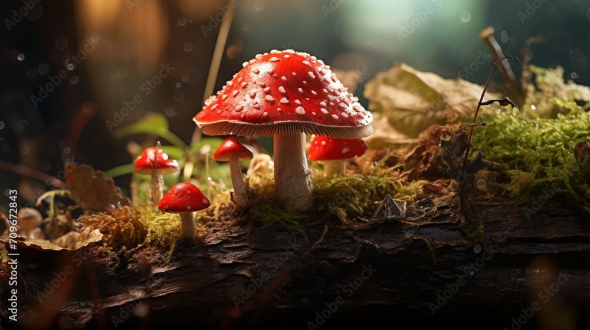

Amanita muscaria
Es reconocido por su sombrero rojo con manchas blancas y su tallo blanco tiene un anillo de gran tamaño.

Cornezuelo de centeno
Crece sobre diversos granos y cereales.

Clitocybe odora
Es apreciado por su sabor agradable y su aroma distintivo al anís.

Cortinarius violaceus
Se caracteriza por su sombrero de color púrpura oscuro a violeta, que puede medir entre 5 y 15 centímetros de diámetro, y tiene una forma convexa que puede volverse aplanada.